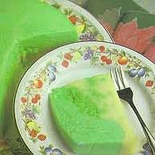

Puding Tape Kelapa Muda

Bahan-Bahan :
Pelapis Hijau :
- 1 bungkus agar-agar tanpa warna
- 1,5 gelas santan kental (1 butir kelapa)
- 200 gram gula pasir
- pewarna hijau secukupnya
- 5 putih telur
- 2 buah kelapa muda, dikeruk dagingnya
Pelapis Putih :
- 1 bungkus agar-agar tanpa warna
- 3 gelas santan kental (1 butir kelapa)
- 150 gram gula pasir
- 2 kuning telur
- 100 gram tape ketan hijau
Cara Mengolah :
- Masak agar-agar bersama santan, gula, dan pewarna hijau hingga mendidih.
- Masukkan kelapa muda.
- Biarkan sebentar, angkat.
- Kocok putih telur hingga kaku lalu masukkan adonan agar-agar.
- Kocok terus hingga tercampur rata.
- Masukkan dalam cetakan kue.
- Biarkan adonan membeku.
- Masak seluruh bahan lapisan putih kecuali kuning telur dan tape ketan, sampai mendidih, angkat.
- Kocok sebentar kuning telur lalu masukkan dalam santan.
- Aduk dengan kecepatan tinggi agar adonan santan tidak terpisah dengan kuning telur.
- Letakkan 2 atau 3 sendok makan tape ketan, sebarkan merata.
- Siram dengan adonan putih setinggi 2 cm.
- Biarkan sebentar kemudian tebarkan kembali tape ketan.
- Siram kembali dengan adonan putih.
- Lakukan terus hingga adonan habis.
- Biarkan membeku.